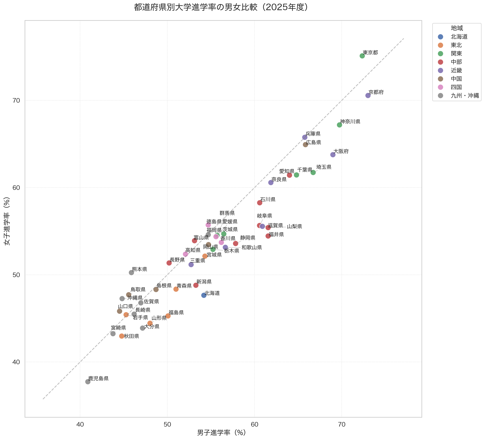
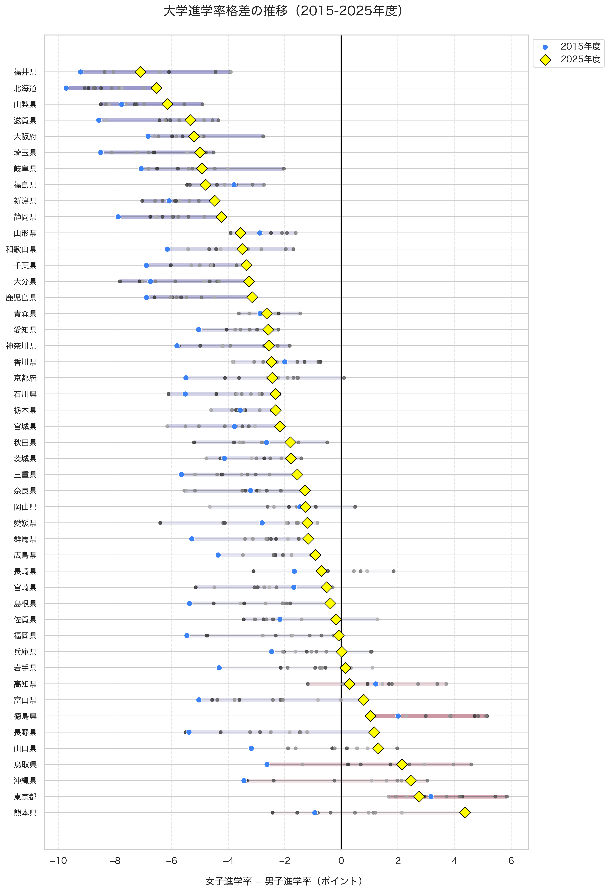
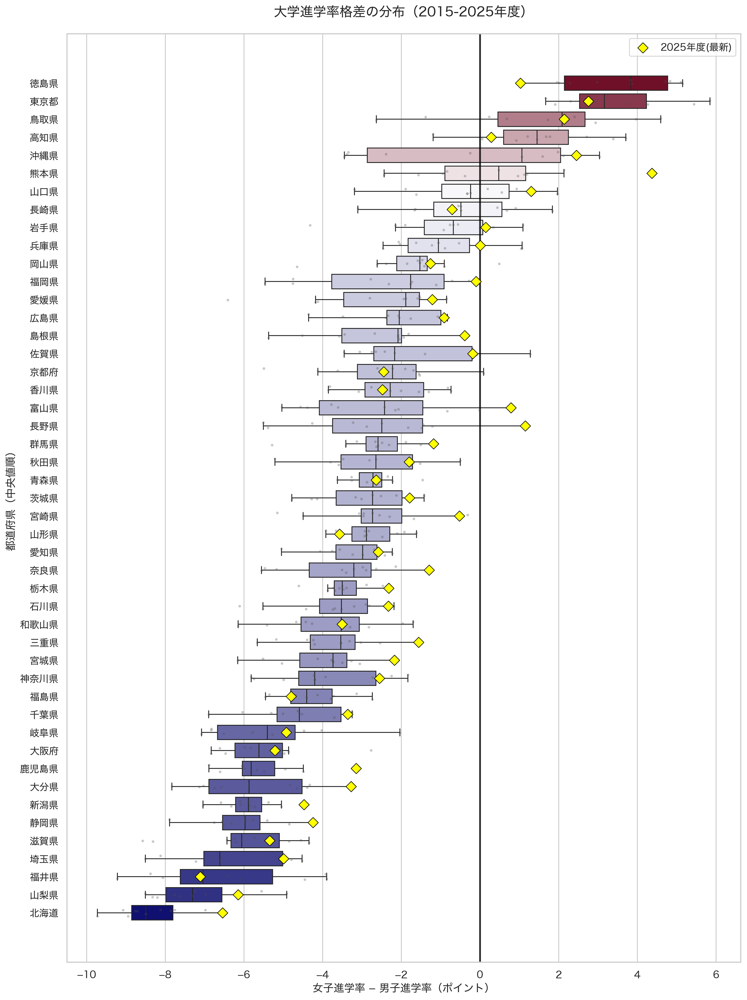
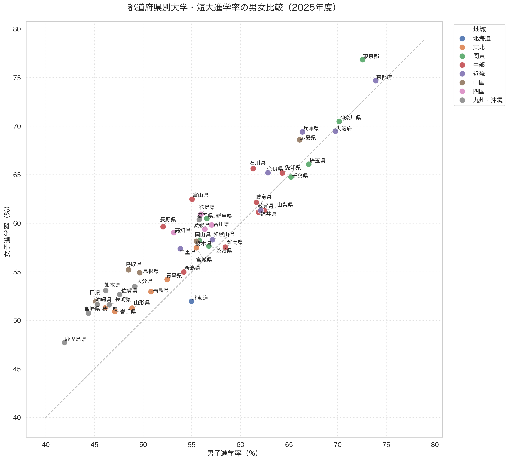
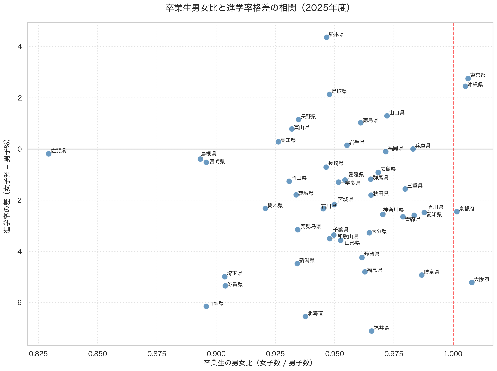
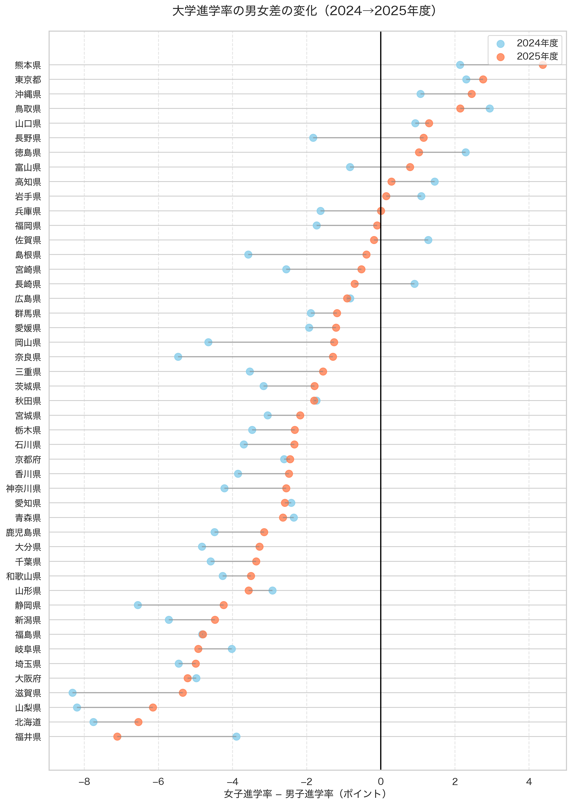

文部科学省が公表する「学校基本調査」の過去11年分（2015〜2025年度）のデータを徹底分析し、日本の大学進学における「男女格差」の実態と、その劇的な変化を可視化しました。
一見すると「進学の機会は平等」に見える日本ですが、データを紐解くと、非常にドラマチックな構造変化が起きていることがわかります。単なる「進学率の推移」だけでなく、地域ごとの特性、短期大学を含めた高等教育全体の傾向、さらには社会構造との関連まで、多角的に分析を進めました。
1. 2025年度の現在地：「男女平等線」から見える進学志向のズレ
まずは、2025年度の最新データから見てみましょう。大学（学部）への進学率を男女別にプロットした散布図です。

中央の点線は「男女平等線（45度線）」です。この線の上にあれば女子の方が進学率が高く、下にあれば男子の方が高いことを示しています。
2025年度のデータでは、東京都（女子 約77% / 男子 約72.6%）が最も高い水準にあり、京都府（女子 約75% / 男子 約74%）、神奈川県（女子 約71% / 男子 約68%）と続きます。都市部は概ね高い進学率を示し、かつ男女の差も比較的小さい傾向にあります。
一方、地方県に目を向けると、状況は多様です。例えば福井県では男子の進学率が約61.6%に対し女子は約54.4%と、7ポイント以上の差があります。対照的に、熊本県では女子が約50.3%、男子が約45.9%と、女子が4ポイント以上リードしています。
都市部と地方の二極化
この散布図から読み取れる重要な点は、「都市部ほど進学率が高く、男女差も小さい」という傾向です。これは、都市部では：
- 大学の選択肢が豊富で、自宅通学も可能
- 性別に関わらず高等教育を受けることが「当たり前」という文化
- 就職市場が多様で、学歴重視の傾向が強い
といった複合的な要因が働いていると考えられます。
2. 11年間の「軌跡」が物語る是正の歴史
次に、この格差が過去11年間でどのように変化してきたかを見てみましょう。このグラフは、本分析の核心とも言える可視化です。

このグラフでは、各都道府県について2015年（青い点）から2025年（黄色いダイヤモンド）への変化を示しています。背景の色は、その県の11年間の「歴史的な傾向」を表しており、紺色が濃いほど男子優位、バーガンディ（赤紫）が濃いほど女子優位な体質を持っています。
「是正」の軌跡が見える県
注目すべきは、多くの県で黄色いダイヤモンド（最新値）が中央の「0%ライン（男女平等）」に向かって移動していることです。特に顕著なのは：
- 北海道：2015年は約-9.7ポイントの男子優位でしたが、2025年には約-6.5ポイントまで縮小
- 群馬県：2015年の約-5.3ポイントから2025年には約-3.2ポイントへ
- 岩手県：2015年の約-4.3ポイントから2025年には約-1.5ポイントへと大幅改善
「逆転」した県も
さらに興味深いのは、この11年間で男子優位から女子優位へと「逆転」した県が複数存在することです：
- 東京都：2015年は約-0.8ポイントの男子優位でしたが、2025年には+2.8ポイントの女子優位に
- 沖縄県：2015年の約-1.6ポイントから2025年には+2.5ポイントへと逆転
これは、日本全体として格差が是正されているだけでなく、一部の地域では女子の進学意欲が男子を上回る構造的変化が起きていることを示しています。
3. 箱ひげ図で見る「格差の分布」と統計的特徴
11年間のデータを統計的に集約した箱ひげ図を見てみましょう。この図は、各県の「歴史的な傾向」と「最新の状況」を同時に把握できる優れた可視化です。

箱ひげ図の読み方
この図では、各県の11年間のデータを箱で表現しています：
- 箱の中央の線：11年間の中央値（真ん中の値）
- 箱の上下：データの25%点と75%点（中央の50%のデータ範囲）
- ヒゲ：データの最小値と最大値（外れ値を除く）
- 黄色いダイヤモンド（◆）：2025年度の最新値
色が示す歴史的傾向
箱の色は「11年間の中央値が0%からどれだけ離れているか」を示しており：
- 紺色：歴史的に男子の進学率が高い県（福井、北海道、山梨など）
- バーガンディ：歴史的に女子の進学率が高い県（熊本、東京、沖縄など）
- 白に近い色：男女がほぼ平等な県（山口、鳥取など）
「縮小傾向」の可視化
多くの県で、箱の中央（歴史的な中央値）よりも0%ラインに近い位置に黄色い点（2025年度）があることがわかります。これは「近年、急速に格差が縮小している」ことを意味します。
例えば、福井県は歴史的に最も男子優位な県の一つですが、箱の範囲は-10%〜-6%程度に分布しており、2025年の値は-7.1%と、この範囲の中では比較的0%に近い位置にあります。つまり、福井県でも格差は徐々に縮小しているのです。
4. 年度ごとの詳細分析：11年間の変化を数字で追う
全国の進学率格差（中央値）の推移を、年度ごとに詳しく見てみましょう。
| 年度 | 格差（中央値） | 前年比 |
|---|---|---|
| 2015年度 | -4.36 pt | — |
| 2016年度 | -4.06 pt | +0.30 pt |
| 2017年度 | -3.74 pt | +0.32 pt |
| 2018年度 | -2.73 pt | +1.01 pt |
| 2019年度 | -2.14 pt | +0.59 pt |
| 2020年度 | -2.76 pt | -0.62 pt |
| 2021年度 | -2.81 pt | -0.05 pt |
| 2022年度 | -2.83 pt | -0.02 pt |
| 2023年度 | -2.94 pt | -0.11 pt |
| 2024年度 | -3.06 pt | -0.12 pt |
| 2025年度 | -1.80 pt | +1.26 pt |
注目すべき転換点
この表から、いくつかの重要な転換点が浮かび上がります：
- 2015-2019年：順調に格差が縮小（-4.36pt → -2.14pt、計2.22pt改善）
- 2020-2024年：コロナ禍の影響か、改善が停滞（-2.76pt → -3.06pt、むしろ悪化）
- 2025年：劇的な改善（-3.06pt → -1.80pt、1年で1.26pt改善）
特に2025年度の改善幅は過去11年間で最大であり、これは何らかの構造的な変化が起きている可能性を示唆しています。考えられる要因としては：
- コロナ禍からの完全な回復と、女子の進学率の急回復
- 地方における女子の進学環境改善（地元大学の定員増など）
- 社会全体での男女平等意識の浸透
5. 短期大学を含めると現れる「完全逆転」
これまでは「大学（学部）のみ」のデータを見てきましたが、ここに短期大学の進学率を加えると、風景は劇的に変わります。

なぜ短大を含めると逆転するのか
短大を含めた場合、全国47都道府県のほぼ全てで女子の進学率が男子を上回ることになります。これは、日本の短期大学が歴史的に「女子の高等教育機関」として機能してきた背景があります。
2025年度のデータを詳しく見ると：
- 大学のみ：男子優位の県が多数（47都道府県中、約30県）
- 大学+短大：女子優位の県が圧倒的多数（47都道府県中、約45県）
平均差は約2.94ポイント（女子優位）となっており、これは2024年度（約2.96ポイント）から引き続き、「高等教育全体への進学意欲」では女子が明確にリードしている現状を裏付けています。
短大進学率自体は減少傾向
ただし注意すべきは、短大への進学率自体は全国的に減少傾向にあることです。多くの短大が四年制大学への改組を進めており、今後は「大学のみ」でのデータがより重要になってくると考えられます。
6. 地域特性から見る格差の背景
都道府県ごとの特性を詳しく見ていくと、格差の背景にある社会構造が見えてきます。
男子優位が続く県の特徴
2025年度でも男子優位が比較的大きい県（格差-5pt以上）には、共通する特徴があります：
- 製造業の就職先が豊富：福井県、山梨県、滋賀県など
- 地元就職率が高い：男子は高校卒業後に地元の工場等に就職する選択肢が多い
- 大学が少ない：県内に選択肢が少なく、進学には県外移動が必須
女子優位に転じた県の特徴
逆に、女子優位が顕著な県（格差+3pt以上）の特徴は：
- 都市部：東京都、神奈川県など、大学が豊富
- 地方中核都市：熊本県、沖縄県など、地元の大学が女子に人気
- 第三次産業中心：事務職などホワイトカラーの職が多く、学歴重視
7. 「男女比の影響」という仮説の検証
ここで一つ、重要な仮説を検証します。「進学率の男女差は、単にその県の高校卒業生の男女比が偏っているからではないか？」というものです。

分析結果：ほぼ無相関
分析の結果、相関係数はわずか0.07。統計学的には、0に近いほど「関係がない」ことを示しますので、この結果は「卒業生の男女比と進学率格差にはほとんど関係がない」ことを意味します。
つまり、「卒業生の数が男子の方が多いから進学率が低く見える」といった物理的・統計的な要因ではなく、より本質的な社会構造の問題として格差が存在していると言えます。
では何が格差を生んでいるのか
統計的な偶然では説明できないとなると、考えられる要因は：
- 産業構造：地元の製造業への就職など、男子の「大学に行かない選択肢」が豊富
- 経済的要因：進学費用の負担を考えた際、「男子は就職、女子は進学」という判断
- 社会的期待：「男子は早く自立すべき」「女子は学歴が必要」といった意識
- 地理的要因：県外進学への心理的・経済的ハードルが男女で異なる
これらは複合的に作用しており、単一の要因で説明することは困難ですが、データはこうした構造的な問題の存在を強く示唆しています。
8. 2024年度との比較：この1年間で何が変わったのか
最後に、直近1年間（2024→2025年度）の変化を詳しく見てみましょう。

全国的な改善傾向
このダンベルチャートを見ると、ほとんどの都道府県で線が右側（0%ライン）に向かって伸びていることがわかります。つまり、1年間で全国的に格差が縮小したということです。
特に改善が顕著だった県
- 北海道：-7.8pt → -6.5pt（1.3pt改善）
- 茨城県：-4.8pt → -3.4pt（1.4pt改善）
- 島根県：-3.5pt → -1.8pt（1.7pt改善）
これらの県では、女子の進学率が男子を上回るペースで上昇したことが要因と考えられます。
おわりに：データが示す「是正」の確かな足跡と今後の展望
今回の11年間にわたる詳細な分析で明らかになったのは、日本の大学進学の現場において、確実に「男女格差の是正」が進んでいるという事実です。
分析から得られた主要な知見
- 全国の格差（中央値）が11年間で半分以下に縮小（-4.36pt → -1.80pt）
- 2025年度は過去最大の改善幅を記録（前年比+1.26pt）
- 女子の進学率の伸びが男子を上回る傾向が続いている
- 短大を含めた高等教育全体では女子が主流になりつつある
- 都市部ほど格差が小さく、進学率も高いという地域差
- 格差は統計的偶然ではなく、社会構造を反映している
今後の注目点
この傾向が続くと、近い将来「全国平均で女子の進学率が男子を上回る」日が来るかもしれません。実際、東京都や熊本県など、既に女子優位に転じた県も増えています。
また、短大進学率の減少と四年制大学への進学率上昇が同時に進む中、今後は「大学のみ」でのデータがより重要になってきます。女子の四年制大学志向がさらに強まれば、格差是正のスピードは加速するでしょう。
データの向こう側にあるもの
しかし、忘れてはならないのは、これらの数字の向こう側には、一人ひとりの若者の人生の選択があるということです。データが示す「是正」の傾向は歓迎すべきものですが、同時に：
- 地方における進学環境の整備
- 経済的理由で進学を諦めざるを得ない層への支援
- 「進学しない選択」もまた尊重される社会
といった、より本質的な教育の機会均等についても、引き続き注視していく必要があります。
各地域の若者の選択の背景を、データを通して今後もしっかりと追っていきたいと思います。